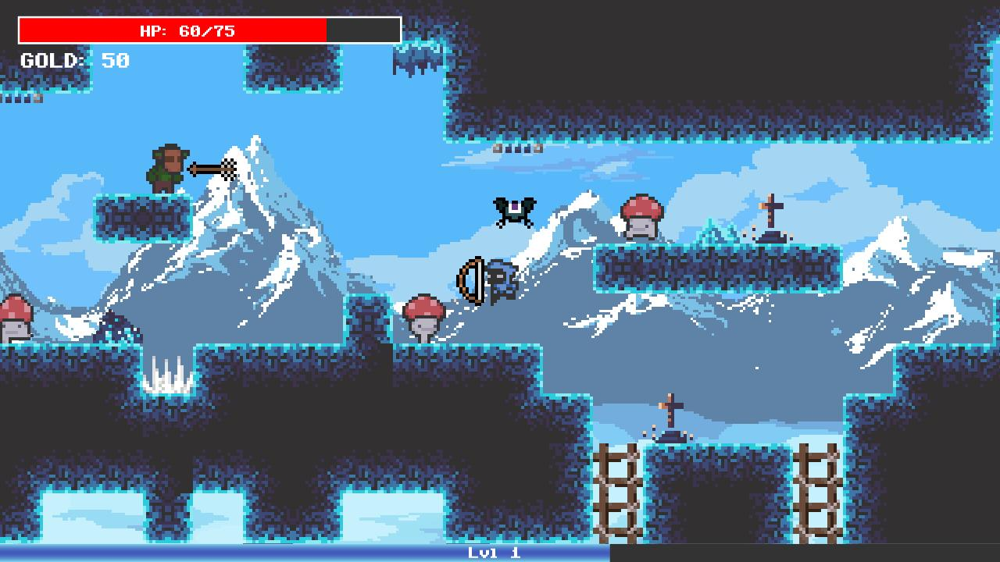
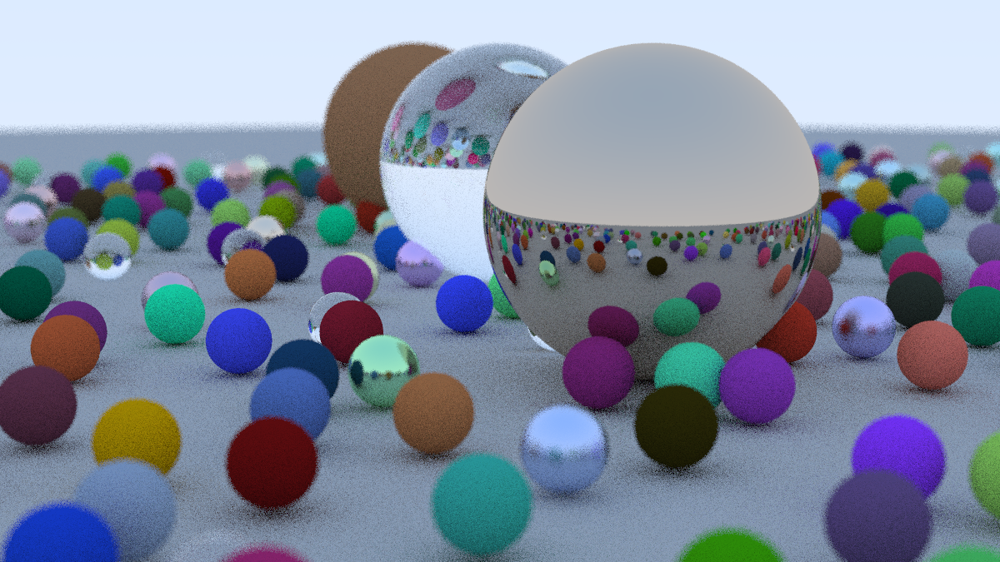

|
Suzuran Takikawa
I am a 4th Year Computer Science student at the University of British Columbia. I'm currently a 3D Graphics Driver Performance Intern at Intel Corporation, where I am working on graphics driver performance optimizations with the AXG Group.
My main interests are currently in Computer Graphics, Computer Vision, and Machine Learning.
I’m looking for Fall 2022 internships as well as 2023 new grad roles.
Email /
LinkedIn /
Github
|

|
|
|
University of British Columbia
Faculty of Science
Bachelor of Science
Computer Science Major
September 2019 - May 2023
GPA: 3.9 / 4.0
Coursework:
CPSC 302 (Numerical Computation for Algebraeic Problems)
CPSC 304 (Relational Databases)
CPSC 310 (Software Engineering)
CPSC 313 (Computer Hardware and Operating Systems)
CPSC 314 (Computer Graphics)
CPSC 320 (Intermediate Algorithms)
CPSC 322 (Intro to Artificial Intelligence)
CPSC 340 (Machine Learning)
CPSC 425 (Computer Vision)
CPSC 426 (Computer Animation)
CPSC 427 (Video Game Programming)
|
|

|
Ascent
Ascent is a 2D roguelike action platformer game made for CPSC427, a video game development course at UBC. The entire game is written with OpenGL and C++. We were runner-up for Best Game, selected by an industry panel. The game and trailer is available
here.
|
|
|
WebGL 2D Fluid Simulation
Github
Real-time 2D Fluid Simulation running on GPU using WebGL and THREE.js. Demo is available
here.
|
|

|
Ray Tracing in Python
Github
Ray Tracing written in Python, based on
Ray Tracing in One Weekend
which is written in C++.
|
|
|
Intel Corporation
3D Graphics Driver Performance Intern
Hillsboro, Oregon, USA
May 2022 - Present
3D graphics driver performance optimization and development with the AXG Group.
|
|
|
University of British Columbia
Teaching Assistant
Vancouver, British Columbia, Canada
January 2022 - April 2022
Teaching assistant for CPSC 314: Computer Graphics.
Holding office hours, writing exam questions.
|
|
|
UBC Undergraduate Research Opportunities
Research Mentee
Vancouver, British Columbia, Canada
October 2021 - April 2022
Computer Animation Research under PhD Student Hung Yu (Ben) Ling
|
|
|
Stanford Graduate School of Business
Research Assistant
Remote
January 2021 - May 2021
Venture Capital information extraction using Machine Learning and NLP.
|
|
|
UBC LaunchPad
Software Developer
Vancouver, British Columbia, Canada
September 2019 - May 2020
Web App Development using Python, Machine Learning, NLP.
|
|
|
Emerada Co., Ltd
Software Engineer Intern
Tokyo, Japan
June 2019 - August 2019
Web Service Development using Ruby on Rails, Heroku, AWS S3.
|
|
|
Linn-Benton Community College
Technical Writer and Teaching Assistant
Corvallis, Oregon
May 2016 - August 2018
Textbook development for the Manufacturing Processes 4-5, CS 160 (Orientation to Computer Science), & CIS 125 (Intro to Software Applications) classes.
Teaching Assistant for CS 161 (Introduction to Computer Science in Java).
Lesson plan development for a Python summer camp.
|
|